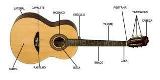
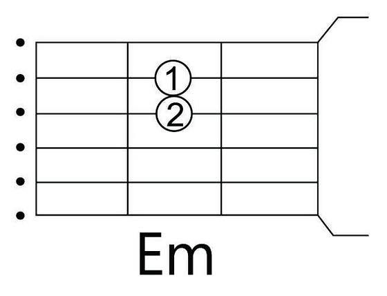
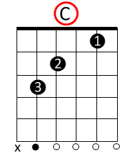
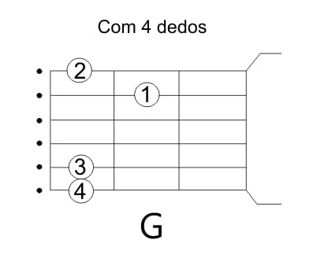
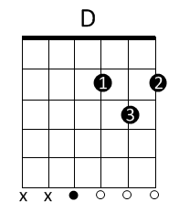

São eles:
Tá, mais qual nome devo dar a cada parte do violão?
Vamos facilitar ainda mais do que foi passado na aula. E para isso, podemos ter como base a imagem abaixo
Com base nisso, podemos destacar os seguintes tipos de violões:
Perceba que nas duas formas, a curvatura do corpo do violão é posicionada na coxa do músico com a coluna ereta. Assim, evitando um desconforto/dores e garantindo uma melhor visão do instrumento.
Importante que, ao fazer uma determinada nota, a mão esquerda esteja com uma pegada bem firme no braço do violão. Garantindo uma melhor sonoridadeSabemos que na escala musical temos uma sequências de notas, formadas por:dó, ré, mi, fá, sol, lá, si. Além das menores, relativos, sustenidos, etc. Mas vamos por partes. Trabalhamos primeiramente com notas mais simples, principalmente aquelas que NÃO apresentam pestana em sua composição. De ínicio, escolhemos a tonalidade de "Sol maior" ou como alguns já conhecem, "G".
Com base nisso, trabalhamos apenas com as notas: mi menor, dó, sol, ré.
Não entendeu? Fique tranquilo! Para melhor entendimento, vamos analisar as imagens a seguir:    